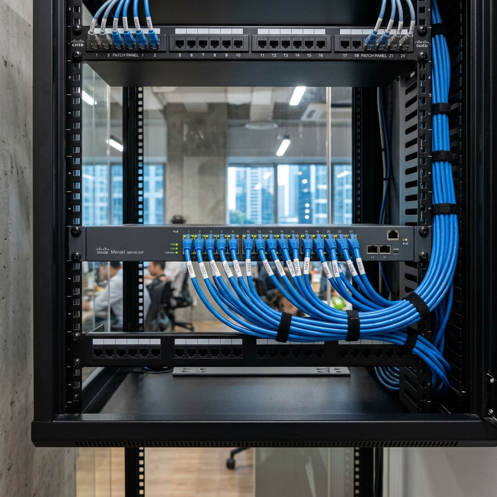

1. The camera — where it starts
An IP camera contains an image sensor that captures light and converts it to a digital signal. The sensor size matters — a larger sensor collects more light, which is why cameras with bigger sensors perform better in low-light conditions. The image is then compressed inside the camera before transmission. The most common compression standard today is H.265 (also called HEVC), which produces significantly smaller files than the older H.264 standard for the same image quality. This matters for storage sizing: a system using H.265 can store roughly twice as many days of footage as the same system using H.264, on the same amount of hard disk.
Most current IP cameras also include a TF card slot for local storage. This means footage can be stored directly on a memory card inside the camera as a backup if the network connection to the NVR is interrupted. For high-security applications, this redundancy is worth enabling.
The most significant development in IP cameras in recent years is edge analytics — the camera processes the image itself rather than sending raw footage to the NVR for processing. A camera with built-in AI can detect a person crossing a perimeter line, recognise a face, count people in a space, or identify vehicle types, all at the camera level before any footage leaves the device. This reduces the processing load on the NVR and enables faster response times for alert-based applications.
The compression format the camera uses affects your storage costs more than the resolution does. Specify H.265 for any new installation — older H.264 systems consume nearly double the storage for the same footage.
2. PoE switches — power and data in one cable
Power over Ethernet (PoE) is the technology that allows a single Cat5e or Cat6 cable to deliver both network data and electrical power to the camera. This is what makes IP camera installations clean — one cable per camera, no separate power supply required at each mounting point.
PoE switches come in 4, 8, 16, and 24-port configurations. Each port connects to one camera. The switch feeds data up to the NVR and power down to the cameras simultaneously.
Two practical rules govern PoE switch selection:
- Distance limit. The maximum cable run between a PoE switch and a camera is 100 metres. Beyond that, signal and power degrade. For larger sites where cameras are spread across a wide area, multiple switches are positioned around the site rather than running all cables back to a single central switch.
- Power budget. Each PoE switch has a total power budget — the maximum wattage it can deliver across all ports simultaneously. A switch rated at 120W shared across 8 ports averages 15W per camera. PTZ cameras and cameras with IR illuminators draw more power than fixed cameras. Always verify the power budget against your camera selection before specifying the switch.

3. The NVR — recording, storage, and playback
The Network Video Recorder receives the compressed video streams from all connected cameras, writes them to hard disk, and serves footage for live view and playback. It is the component that ties the system together and the one most likely to become a bottleneck if undersized.
NVRs are rated by channel count — the number of cameras they can manage simultaneously — and by the number of hard disk bays they support. For a typical small commercial installation of 8 to 16 cameras, a 16-channel NVR with 2 to 4 hard disk bays is appropriate. For larger installations, enterprise NVRs or dedicated VMS (Video Management Software) platforms running on server hardware handle 32, 64, or 128 cameras.
For installations where cabling is physically spread across a large building, it is worth specifying an NVR with PoE ports built in — this allows a small number of cameras close to the NVR to connect directly without needing a separate switch. For the majority of cameras at a distance, separate PoE switches feed back to the NVR via uplink.
4. Hard disk storage — not all disks are equal
The hard disk inside an NVR is not the same as the hard disk in your laptop. A surveillance hard disk is writing data continuously, 24 hours a day, 7 days a week, every week of the year. Standard desktop hard disks are designed for intermittent read/write operations — subjected to continuous surveillance workloads, they fail significantly faster than rated.
Surveillance-grade disks — Seagate SkyHawk and Western Digital Purple are the two main options for standard installations — are engineered for this continuous write pattern. They also handle the vibration from multiple disks spinning in the same chassis better than desktop drives.
For RAID configurations, the specification steps up further. RAID requires enterprise-grade or NAS-grade disks — Seagate Exos or Western Digital Gold — that are rated for higher workloads and designed to operate reliably alongside other disks in an array. Using standard disks in a RAID configuration is a false economy that typically results in disk failure within 18 months.
Change surveillance hard disks every three years regardless of whether they have failed. The read/write cycles accumulated in three years of continuous operation bring most disks close to their rated limit. Replacing them on a schedule is far cheaper than recovering from an unexpected failure when you need the footage.
5. Cable infrastructure — Cat6 and patch panels
The cable connecting cameras to switches and switches to the NVR is Cat5e or Cat6 ethernet, terminated with RJ45 connectors. Cat6 is preferred for new installations — it supports higher bandwidth and performs better over longer runs, particularly relevant as camera resolutions increase.
For larger installations of 16 cameras or more, patch panels are worth specifying. A patch panel sits in the server rack and provides a neat termination point for all incoming camera cables. Individual patch cables then connect each port on the panel to the corresponding port on the PoE switch. This makes fault-finding straightforward — a camera that stops working can be traced to a specific patch panel port, disconnected, and tested without disturbing any other connections.
Without a patch panel, all camera cables terminate directly into the switch. This is acceptable for small installations but creates a tangled, difficult-to-manage installation on anything larger.
6. Designing the system on paper first
Before a cable is run or a camera is mounted, the system should exist on paper. A CCTV layout plan shows camera positions, coverage arcs, cable routes, switch locations, and the NVR position. For larger or more complex sites, professional CCTV design software plots the coverage mathematically — showing exactly what area each camera covers at a given field of view and mounting height, and identifying any gaps.
The layout plan is also the document that answers the question every facilities manager eventually asks: which camera covers that area? A system with no documentation is a system that becomes progressively harder to manage as staff change and memories fade.
A system that is designed on paper first, with coverage arcs mapped and cable routes planned, installs faster, has fewer problems, and is easier to maintain than one that is designed on the fly during installation. We produce a layout drawing for every project before we quote. If a contractor is not offering this, ask why.

Ler Wee Meng
Founder & CEO, Securevision Pte Ltd
Wee Meng has over 35 years of experience in security systems engineering and integration. He holds a BEng in Electrical and Electronic Engineering from the National University of Singapore and a law degree from the University of London.
He founded Securevision in 2006 and has since led security system deployments across more than 1,000 sites in Singapore — spanning residential properties, condominiums, commercial buildings, industrial facilities, and institutions.
His technical focus spans CCTV and AI video analytics, IP intercom systems, access control, licence plate recognition, and integrated platform design. He is the architect behind VESTA, Securevision's unified security platform built specifically for condominium management in Singapore.
Wee Meng works directly with managing agents, MCSTs, property developers, architects, and security companies to design systems that are engineered for the site, not sold off a catalogue.
Securevision holds Police Licence No. L/PS/000267/2023P and is registered with the Building and Construction Authority of Singapore.